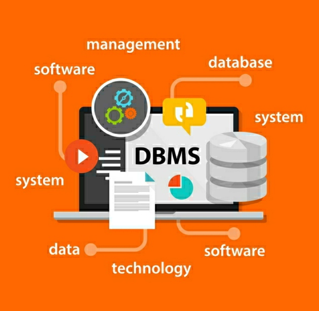
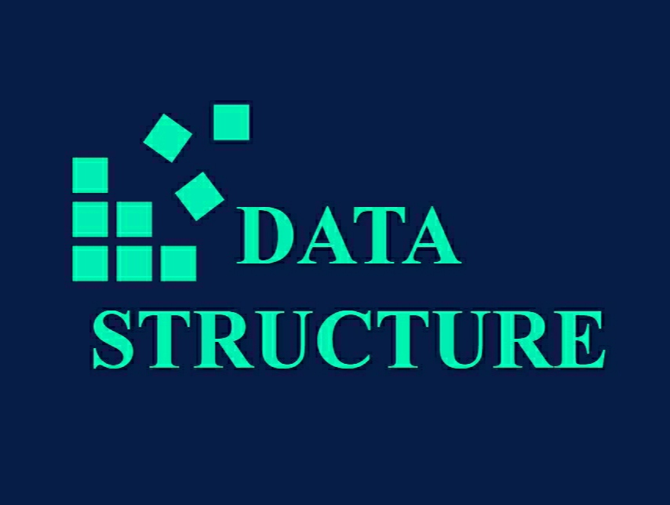
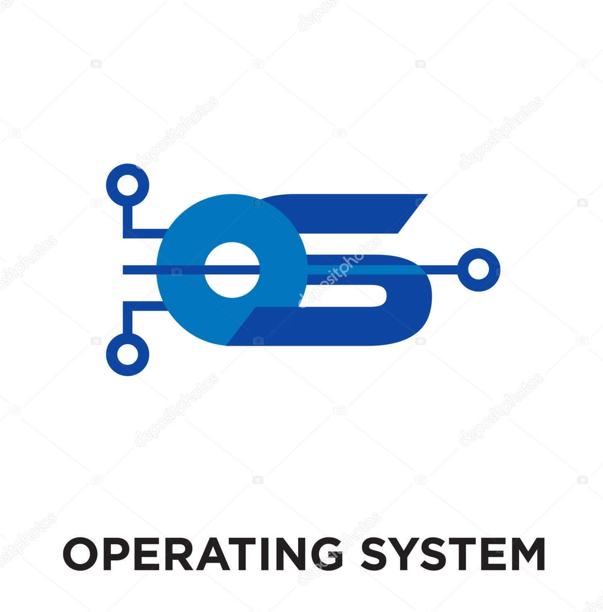
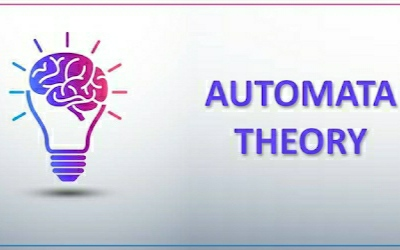
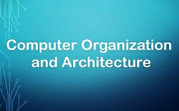

-
OOP With C++

In an object-oriented system, all data is represented as discrete objects with which the user and other objects may interact. An object-oriented system allows the user to focus completely on tasks rather than tools.Examples of object-oriented programming languages include C++ and Smalltalk.
Video series for OOP With C++
OOP With C++ videosClick here to get all study material in Pdf form for OOP With C++
Open Pdf PDF of OOP With C++
-
Database Management system
The database management system (DBMS) is the software that interacts with end users, applications, and the database itself to capture and analyze the data. The DBMS software additionally encompasses the core facilities provided to administer the database. The sum total of the database, the DBMS and the associated applications can be referred to as a "database system". Often the term "database" is also used to loosely refer to any of the DBMS, the database system or an application associated with the database.
Video series for DBMS
DBMS videosClick here to get all study material in Pdf form for DBMS
Open Pdf PDF of DBMS
-
Data Structures
In computer science, a data structure is a data organization, management, and storage format that enables efficient access and modification. More precisely, a data structure is a collection of data values, the relationships among them, and the functions or operations that can be applied to the data.
Video series for Data Structures
Data Structure videosClick here to get all study material in Pdf form for Data Structures
Open Pdf PDF of Data Structures
-
Operating Systems
An operating system (OS) is system software that manages computer hardware, software resources, and provides common services for computer programs.Time-sharing operating systems schedule tasks for efficient use of the system and may also include accounting software for cost allocation of processor time, mass storage, printing, and other resources.
Video series for Operating Systems
Operating Systems videosClick here to get all study material in Pdf form for Operating Systems
Open Pdf PDF of Operating Systems
-
Software Engineering

Software engineering is the application of principles used in the field of engineering, which usually deals with physical systems, to the design, development, testing, deployment and management of software systems.
Video series for Software Engineering
Software Engineering videosClick here to get all study material in Pdf form for Software Engineering
Open PdfPDF of Software Engineering
-
Computer Networks

A computer network is a group of computers that use a set of common communication protocols over digital interconnections for the purpose of sharing resources located on or provided by the network nodes.
Video series for Computer Networks
Computer Network videosClick here to get all study material in Pdf form for Computer Networks
Open Pdf PDF of Computer Networks
-
Theory of Automata
Automata theory is the study of abstract machines and automata, as well as the computational problems that can be solved using them. It is a theory in theoretical computer science. The word automata (the plural of automaton) comes from the Greek word αὐτόματα, which means "self-making".
Video series for Theory of Automata
Theory of Automata videosClick here to get all study material in Pdf form for Theory of Automata
Open Pdf PDF of Theory of Automata
-
Computer Organisation and Architecture
Computer Architecture is concerned with the way hardware components are connected together to form a computer system. Computer Organization is concerned with the structure and behaviour of a computer system as seen by the user. It acts as the interface between hardware and software.
Video series for Computer Organisation and Architecture
Computer Organisation and ArchitectureClick here to get all study material in Pdf form for Computer Organisation and Architecture